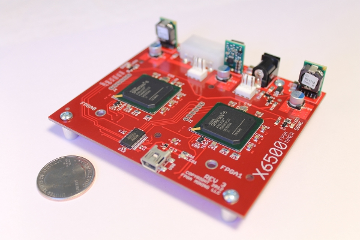

02-02-2013 | by fizzisist
Dear FPGA Mining customers,
Unfortunately, demand for FPGA miners has been too low in recent months to justify continuing to produce new X6500s. For the foreseeable future, FPGA Mining will be suspending operations. It's sad to step away from such an exciting and interesting project, but the time has come.
Thank you all for your interest and support! We'll still be involved in the Bitcoin world and hopefully find a new project to participate in soon!
Best regards,
fizzisist, fpgaminer, TheSeven, li_gangyi
FPGA Mining LLC
09-29-2012 | by fizzisist
FPGA Mining LLC now has our very own store! X6500s are in stock and ready to ship now. Check it out!
Along with this move, we're announcing new low prices. Single unit prices have been reduced by $30 per board!
On top of that, we're offering big bulk discounts on orders of four or more boards, which you can now get automatically through the store. Just use the promo code FOURORMORE during checkout and you will automatically receive an 8% discount! As usual, if you're interested in even larger orders, email us at sales@fpgamining.com to discuss pricing.
Unfortunately, we're unable to accept bitcoin payments through the store right now. If you'd like to pay with bitcoins, send us an email and we'll handle that directly.
08-14-2012 | by fizzisist
As you've probably noticed, we've been sold out of X6500s for a while now. The good news is that we finally have a new batch in! Burn in testing has begun and you should see more stock at Cablesaurus.com soon. We're also accepting bulk orders now, with lead times of about a week, depending on the size of the order. Please email us at sales@fpgamining.com if you have any questions!
04-06-2012 | by fpgaminer
Hey guys. I finally put together an installation package of sorts for Windows:
X6500 Easy Package for Windows
This should make it simple and easy take an X6500 and go from 0 to Bitcoin in no time (on Windows). It includes a driver installation program for the libusb driver, MPBM with compiled EXE, and all the current mining firmware. I tested it out on clean VM installs of Windows 7 64-bit, Windows 7 32-bit, and Windows XP 32-bit.
If that's too convenient for you, the individual pieces can also be downloaded:
Let me know if there are any problems. Though I did take a lot of time testing it, this is still fresh off the presses. :)
03-29-2012 | by fizzisist
In the last couple weeks, we've been experimenting with different FPGA core voltages (VCCINT). Our measurements have shown that on most rev3 boards, performance can be increased significantly by slightly increasing this voltage. Because of this, all rev3 boards starting today will be shipped with VCCINT set to 1.23V (instead of the original 1.20V). This applies to all boards shipped on or after 3/29/2012.
While this increases the board's power consumption slightly (data here), it also increases the potential limit on clock rate, which is especially useful with the new "overclocker" bitstreams.
If anyone would like to increase the core voltages on an older board, it simply means swapping two resistors (R2 and R8). You can either attempt this yourself or send it back to us and we'll do the work free of charge. We only ask that you pay the return shipping charge.
03-12-2012 | by fizzisist

I took some photos of the rev 3 boards today. Check them out on the Product page!
03-10-2012 | by fizzisist
To prepare for the imminent release of the new and improved X6500 rev 3, we're moving over to a new website today. We hope you like it!
Subscribe to RSS